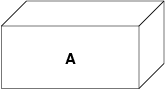
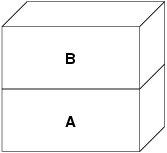
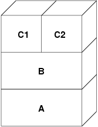
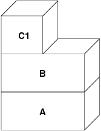

Первоначально эта статья была опубликована в номере DaemonNews за январь 2000 года. Эта версия
статьи может включать добавления, касающиеся изменений в
реализации VM во FreeBSD от Мэтта и других авторов.
Название статьи говорит лишь о том, что я попытаюсь
описать в целом VM-систему понятным языком. Последний
год я сосредоточил усилия в работе над несколькими
основными подсистемами ядра FreeBSD, среди которых
подсистемы VM и подкачки были самыми интересными, а NFS
оказалась `необходимой рутиной'. Я переписал лишь малую
часть кода. Что касается VM, то я единственным большим
обновлением, которое я сделал, является переделка
подсистемы подкачки. Основная часть моей работы
заключалась в зачистке и поддержке кода, с единственной
заметной переделкой кода и без значительной переделки
алгоритмов в VM-подсистеме. В основном теоретическая
база работы VM-подсистемы осталась неизменной, а
большинство благодарностей за современных нововведения
за последние несколько лет принадлежат John Dyson и
David Greenman. Не являясь историком, как Керк, я не
буду пытаться связать различные возможности системы с
именами, потому что обязательно ошибусь.
Перед тем, как перейти непосредственно к существующей
архитектуре, потратим немного времени на рассмотрение
вопроса о необходимости поддержки и модернизации любого
длительно живущего кода. В мире программирования алгоритмы
становятся более важными, чем код, и именно из-за
академических корней BSD изначально большое внимание
уделялось проработке алгоритмов. Внимание, уделенное
архитектуре, в общем отражается на ясности и гибкости кода,
который может быть достаточно легко изменен, расширен или с
течением времени заменен. Хотя некоторые считают BSD
`старой' операционной системой, те их нас, кто работает над
ней, видят ее скорее системой со `зрелым' кодом с
различными компонентами, которые были заменены, расширены
или изменены современным кодом. Он развивается, и FreeBSD
остается передовой системой, вне зависимости от того,
насколько старой может быть часть кода. Это важное отличие,
которое, к сожалению, не всеми понимается. Самой большой
ошибкой, которую может допустить программист, является
игнорирование истории, и это именно та ошибка, которую
сделали многие другие современные операционные системы.
Самым ярки примером здесь является NT, и последствия
ужасны. Linux также в некоторой степени совершил эту
ошибку--достаточно, чтобы мы, люди BSD, по крайней мере по
разу отпустили по этому поводу шутку. Проблема Linux
заключается просто в отсутствии опыта и истории для
сравнения идей, проблема, которая легко и быстро решается
сообществом Linux точно так же, как она решается в
сообществе BSD--постоянной работой над кодом. Разработчики
NT, с другой стороны, постоянно совершают те же самые
ошибки, что были решены в UNIX десятки лет назад, а затем
тратят годы на их устранение. Снова и снова. Есть несколько
случаев `проработка архитектуры отсутствует' и `мы всегда
правы, потому что так говорит наш отдел продаж'. Я плохо
переношу тех, кого не учит история.
Большинство очевидной сложности архитектуры FreeBSD,
особенно в подсистеме VM/Swap, является прямым следствием
того, что она решает серьезные проблемы с
производительностью, которые проявляются при различных
условиях. Эти проблемы вызваны не плохой проработкой
алгоритмов, а возникают из окружающих факторов. В любом
прямом сравнении между платформами эти проблемы
проявляются, когда системные ресурсы начинают истощаться.
Так как я описываю подсистему VM/Swap во FreeBSD, то
читатель должен всегда иметь в виду два обстоятельства.
Во-первых, самым важным аспектом при проектировании
производительности является то, что называется
``оптимизацией критического маршрута''. Часто случается,
что оптимизация производительности дает прирост объема кода
ради того, чтобы критический маршрут работал быстрее.
Во-вторых, четкость общей архитектуры оказывается лучше
сильно оптимизированной архитектуры с течением времени.
Когда как обобщенная архитектура может быть медленнее, чем
оптимизированная архитектура, при первой реализации, при
обобщенной архитектуре легче подстраиваться под
изменяющиеся условия и чрезмерно оптимизированная
архитектура оказывается непригодной. Любой код, который
должен выжить и поддаваться поддержке годы, должен поэтому
быть тщательно продуман с самого начала, даже если это
стоит потери производительности. Двадцать лет назад были
те, кто отстаивал преимущество программирования на языке
ассемблера перед программированием на языке высокого
уровня, потому что первый генерировал в десять раз более
быстрый код. В наши дни ошибочность этого аргумента
очевидна--можно провести параллели с построением алгоритмов
и обобщением кода.
Лучше всего начать описание VM-системы FreeBSD с попытки
взглянуть на нее с точки зрения пользовательского процесса.
Каждый пользовательский процесс имеет единое, принадлежащее
только ему и неразрывное адресное пространство VM,
содержащее несколько типов объектов памяти. Эти объекты
имеют различные характеристики. Код программы и ее данные
являются единым файлом, отображаемым в память (это
выполняющийся двоичный файл), однако код программы доступен
только для чтения, когда как данные программы размещаются в
режиме копирования-при-записи. BSS программы представляет
собой всего лишь выделенную область памяти, заполненную,
если это требовалось, нулями, что называется обнулением
страниц памяти по требованию. Отдельные файлы могут также
отображаться в адресное пространство, именно так работают
динамические библиотеки. Такие отображения требуют
изменений, чтобы оставаться принадлежащими процессу,
который их выполнил. Системный вызов fork добавляет
переводит проблему управления VM полностью в новую
плоскость, вдобавок к уже имеющимся сложностям.
Иллюстрирует сложность страница данных двоичной
программы (которая является страницей
копируемой-при-записи). Двоичная программа содержит секцию
предварительно инициализированных данных, которая
первоначально отображается непосредственно из файла
программы. Когда программа загружается в Vm-пространство
процесса, эта область сначала отображается в память и
поддерживается бинарным файлом программы, позволяя
VM-системе освобождать/повторно использовать страницу, а
потом загружать ее снова из бинарного файла. Однако в
момент, когда процесс изменяет эти данные, VM-система
должна сделать копию страницы, принадлежащую только этому
процессу. Так как эта копия была изменена, то VM-система не
может больше освобождать эту страницу, так как впоследствии
ее невозможно будет восстановить.
Вы тут же заметите, что то, что сначало было простым
отображением файла в память, становится гораздо более
сложным предметом. Данные могут модифицироваться
постранично, когда как отображение файла выполняется для
многих страниц за раз. Сложность еще более увеличивается,
когда процесс выполняет вызов fork. При этом порождаются
два процесса--каждый со с собственным адресным
пространством, включающим все изменения, выполненные
исходным процессом до вызова функции fork(). Было бы глупо для VM-системы делать
полную копию данных во время вызова fork(), так как весьма вероятно, что один
из двух процессов будет нужен только для чтения из той
страницы, что позволяет использование исходной страницы.
То, что было страницей, принадлежащей только процессу,
сделается снова страницей, копируемой при записи, так как
каждый из процессов (и родитель, и потомок) полагают, что
их собственные изменения после разветвления будут
принадлежать только им, и не затронут родственный
процесс.
FreeBSD управляет всем этим при помощи многоуровневой
модели VM-объектов. Исходный файл с двоичной программой
переносится на самый нижний уровень объектов VM. Уровень
страниц, копируемых при записи, находится выше него, и
хранит те страницы, которые были скопированы из исходного
файла. Если программа модифицирует страницы данных,
относящиеся к исходному файлу, то система VM обнаруживает
это и переносит копию этой страницы на более высокий
уровень. Когда процесс разветвляется, добавляются новые
уровни VM-объектов. Это можно показать на простом примере.
Функция fork() является общей
операцией для всех систем *BSD, так что в этом примере
будет рассматриваться программа, которая запускается, а
затем разветвляется. Когда процесс запускается, VM-система
создает некоторый уровень объектов, обозначим его A:

A соответствует файлу--по необходимости страницы памяти
могут высвобождаться и подгружаться с носителя файла.
Подгрузка с диска может потребоваться программе, однако на
самом деле мы не хотим, чтобы она записывалась обратно в
файл. Поэтому VM-система создает второй уровень, B, который
физически поддерживается дисковым пространством
подкачки:

При первой записи в страницу после выполнения этой
операции, в B создается новая страница, содержимое которой
берется из A. Все страницы в B могут сбрасываться и
считываться из устройства подкачки. Когда программа
ветвится, VM-система создает два новых уровня объектов--C1
для порождающего процесса и C2 для порожденного--они
располагаются поверх B:

В этом случае, допустим, что страница в B была изменена
начальным родительским процессом. В процессе возникнет
ситуация копирования при записи и страница скопируется в
C1, при этом исходная страница останется в B нетронутой.
Теперь допустим, что та же самая страница в B изменяется
порожденным процессом. В процессе возникнет ситуация
копирования при записи и страница скопируется в C2.
Исходная страница в B теперь полностью скрыта, так как и
C1, и C2 имеют копии, а B теоретически может быть
уничтожена, если она не представляет собой 'реального'
файла). Однако такую оптимизацию не так уж просто
осуществить, потому что она делается на уровне мелких
единиц. Во FreeBSD такая оптимизация не выполняется. Теперь
положим (а это часто случается), что порожденный процесс
выполняет вызов exec(). Его
текущее адресное пространство обычно заменяется новым
адресным пространством, представляющим новый файл. В этом
случае уровень C2 уничтожается:

В этом случае количество потомков B становится равным
одному и все обращения к B теперь выполняются через C1. Это
означает, что B и C1 могут быть объединены. Все страницы в
B, которые также существуют и в C1, во время объединения из
B удаляются. Таким образом, хотя оптимизация на предыдущем
шаге может не делаться, мы можем восстановить мертвые
страницы при окончании работы процессов или при вызове exec().
Такая модель создает некоторое количество потенциальных
проблем. Первая, с которой вы можете столкнуться,
заключается в сравнительно большой последовательности
уровней объектов VM, на сканирование которых тратится время
и память. Большое количество уровней может возникнуть,
когда процессы разветвляются, а затем разветвляются еще раз
(как порожденные, так и порождающие). Вторая проблема
заключается в том, что вы можете столкнуться с мертвыми,
недоступными страницами глубоко в иерархии объектов VM. В
нашем последнем примере если как родитель, так и потомок
изменяют одну и ту же страницу, они оба получают
собственные копии страницы, а исходная страница в B
становится никому не доступной. такая страница в B может
быть высвобождена.
FreeBSD решает проблему с глубиной вложенности с помощью
приема оптимизации, который называется ``All Shadowed
Case''. Этот случай возникает, если в C1 либо C2 возникает
столько случаев копирования страниц при записи, что они
полностью закрывают все страницы в B. Допустим, что такое
произошло в C1. C1 может теперь полностью заменить B, так
что вместо цепочек C1->B->A и C2->B->A мы
теперь имеем цепочки C1->A и C2->B->A. Но
посмотрите, что получается--теперь B имеет только одну
ссылку (C2), так что мы можем объединить B и C2. В конечном
итоге B будет полностью удален и мы имеем цепочки C1->A
и C2->A. Часто B будет содержать большое количество
страниц, и ни C1, ни C2 не смогут полностью их заменить.
Если мы снова породим процесс и создадим набор уровней D,
при этом, однако, более вероятно, что один из уровней D
постепенно сможет полностью заместить гораздо меньший набор
данных, представленный C1 и C2. Та же самая оптимизация
будет работать в любой точке графа и главным результатом
этого является то, что даже на сильно загруженной машине с
множеством порождаемых процессов стеки объектов VM не часто
бывают глубже четырех уровней. Это так как для
порождающего, так и для порожденного процессов, и остается
в силе как в случае, когда ветвление делает родитель, так и
в случае, когда ветвление выполняет потомок.
Проблема с мертвой страницей все еще имеет место, когда
C1 или C2 не полностью перекрывают B. Из-за других
применяемых нами методов оптимизации этот случай не
представляет большой проблемы и мы просто позволяем таким
страницам существовать. Если система испытывает нехватку
оперативной памяти, она выполняет их выгрузку в область
подкачки, что занимает некоторое пространство в области
подкачки, но это все.
Преимущество модели VM-объектов заключается в очень
быстром выполнении функции fork(), так как при этом не выполняется
реального копирования данных. Минусом этого подхода
является то, что вы можете построить сравнительно сложную
иерархию объектов VM, которая несколько замедляет обработку
ситуаций отсутствия страниц памяти, и к тому же тратится
память на управление структурами объектов VM. Приемы
оптимизации, применяемые во FreeBSD, позволяют снизить
значимость этих проблем до степени, когда их можно без
особых потерь игнорировать.
Страницы с собственными данными первоначально являются
страницами, копируемыми при записи или заполняемыми нулями.
Когда выполняется изменение, и, соответственно,
копирование, начальное хранилище объекта (обычно файл) не
может больше использоваться для хранения копии страницы,
когда VM-системе нужно использовать ее повторно для других
целей. В этот момент на помощь приходит область подкачки.
Область подкачки выделяется для организации хранилища
памяти, которая иначе не может быть доступна. FreeBSD
создает структуру управления подкачкой для объекта VM,
только когда это действительно нужно. Однако структура
управления подкачкой исторически имела некоторые
проблемы.
Во FreeBSD 3.x в структуре управления областью подкачки
предварительно выделяется массив, который представляет
целый объект, требующий хранения в области подкачки--даже
если только несколько страниц этого объекта хранятся в
области подкачки. Это создает проблему фрагментации памяти
ядра в случае, когда в память отображаются большие объекты
или когда ветвятся процессы, занимающие большой объем
памяти при работе (RSS). Также для отслеживания памяти
подкачки в памяти ядра поддерживается `список дыр', и он
также несколько фрагментирован. Так как 'список дыр'
является последовательным списком, то производительность
при распределении и высвобождении памяти в области подкачки
неоптимально и ее сложность зависит от количества страниц
как O(n). Также в процессе высвобождения памяти в области
подкачки требуется выделение памяти в ядре, и это приводит
к проблемам блокировки при недостатке памяти. Проблема еще
более обостряется из-за дыр, создаваемых по чередующемуся
алгоритму. Кроме того, список распределения блоков в
области подкачки легко оказывается фрагментированной, что
приводит к распределению непоследовательных областей.
Память ядра также должна распределяться по ходу работы для
дополнительных структур по управлению областью подкачки при
выгрузке страниц памяти в эту область. Очевидно, что мест
для усовершенствований предостаточно.
Во FreeBSD 4.x подсистема управления областью подкачки
была полностью переписана мною. При этом структуры
управления областью подкачки распределяются при помощи
хэш-таблицы, а не через линейный массив, что дает им
фиксированный размер при распределении и работу с гораздо
меньшими структурами. Вместо того, чтобы использовать
однонаправленный связный список для отслеживания выделения
пространства в области подкачки, теперь используется
побитовая карта блоков области подкачки, выполненная в
основном в виде древовидной структуры с информацией о
свободнов пространстве, находящейся в узлах структур. Это
приводит к тому, что выделение и высвобождение памяти в
области подкачки становится операцией сложности O(1). Все
дерево также распределяется заранее для того, чтобы
избежать распределения памяти ядра во время операций с
областью подкачки при критически малом объеме свободной
памяти. В конце концов, система обращается к области
подкачки при нехватке памяти, так что мы должны избежать
распределения памяти ядра в такие моменты для избежания
потенциальных блокировок. Наконец, для уменьшения
фрагментации дерево может распределять большой
последовательный кусок за раз, пропуская меньшие
фрагментированные области. Я не сделал последний шаг к
заведению 'указателя на распределение', который будет
передвигаться по участку области подкачки при выделении
памяти для обеспечения в будущем распределения
последовательных участков, или по крайней мере
местоположения ссылки, но я убежден, что это может быть
сделано.
Так как система VM использует всю доступную память для
кэширования диска, то обычно действительно незанятых
страниц очень мало. Система VM зависит от того, как она
точно выбирает незанятые страницы для повторного
использования для новых распределений. Оптимальный выбор
страниц для высвобождения, возможно, является самой важной
функцией любой VM-системы, из тех, что она может выполнять,
потому что при неправильном выборе система VM вынуждена
будет запрашивать страницы с диска, значительно снижая
производительность всей системы.
Какую дополнительную нагрузку мы может выделить в
критическом пути для избежания высвобождения не той
страницы? Каждый неправильный выбор будет стоить нам сотни
тысяч тактов работы центрального процессора и заметное
замедление работы затронутых процессов, так что мы должны
смириться со значительными издержками для того, чтобы была
заведомо выбрана правильная страница. Вот почему FreeBSD
превосходит другие системы в производительности при
нехватке ресурсов памяти.
Алгоритм определения свободной страницы написан на
основе истории использования страниц памяти. Для получения
этой истории система использует возможности бита
использования памяти, которые имеются в большинстве
аппаратных таблицах страниц памяти.
В любом случае, бит использования страницы очищается, и
в некоторый более поздний момент VM-система обращается к
странице снова и обнаруживает, что этот бит установлен. Это
указывает на то, что страница активно используется.
Периодически проверяя этот бит, накапливается история
использования (в виде счетчика) физической страницы. Когда
позже VM-системе требуется высвободить некоторые страницы,
проверка истории выступает указателем при определении
наиболее вероятной кандидатуры для повторного
использования.
FreeBSD использует несколько очередей страниц для
обновления выбора страниц для повторного использования, а
также для определения того, когда же грязные страницы
должны быть сброшены в хранилище. Так как таблицы страниц
во FreeBSD являются динамическими объектами, практически
ничего не стоит вырезать страницу из адресного пространства
любого использующего ее процесса. После того, как
подходящая страница, на основе счетчика использования,
выбрана, именно это и выполняется. Система должна отличать
между чистыми страницами, которые теоретически могут быть
высвобождены в любое время, и грязными страницами, которые
сначала должны быть переписаны в хранилище перед тем, как
их можно будет использовать повторно. После нахождения
подходящей страницы она перемещается в неактивную очередь,
если она является грязной, или в очередь кэша, если она
чистая. Отдельный алгоритм, основывающийся на отношении
количества грязных страниц к чистым, определяет, когда
грязные страницы в неактивной очереди должны быть сброшены
на диск. Когда это выполнится, сброшенные страницы
перемещаются из неактивной очереди в очередь кэша. В этот
момент страницы в очереди кэша могут быть повторно
активизированы VM со сравнительно малыми накладными
расходами. Однако страницы в очереди кэша предполагается
`высвобождать немедленно' и повторно использовать в
LRU-порядке (меньше всего используемый), когда системе
потребуется выделение дополнительной памяти.
Стоит отметить, что во FreeBSD VM-система пытается
разделить чистые и грязные страницы во избежание срочной
необходимости в ненужных сбросах грязных страниц (что
отражается на пропускной способности ввода/вывода) и не
перемещает беспричинно страницы между разными очередями,
когда подсистема управления памятью не испытывает нехватку
ресурсов. Вот почему вы можете видеть, что при выполнении
команды systat -vm в некоторых
системах значение счетчика очереди кэша мало, а счетчик
активной очереди большой. При повышении нагрузки на
VM-систему она прилагает большие усилия на поддержку
различных очередей страниц в соотношениях, которые являются
наиболее эффективными. Годами ходили современные легенды,
что Linux выполняет работу по предотвращению выгрузки на
диск лучше, чем FreeBSD, но это не так. На самом деле
FreeBSD старается сбросить на диск неиспользуемые страницы
для освобождения места под дисковый кэш, когда как Linux
хранит неиспользуемые страницы в памяти и оставляет под кэш
и страницы процессов меньше памяти. Я не знаю, остается ли
это правдой на сегодняшний день.
Полагая, что ошибка доступа к странице памяти в VM не
является операцией с большими накладными расходами, если
страница уже находится в основной памяти и может быть
просто отображена в адресное пространство процесса, может
оказаться, что это станет весьма накладно, если их будет
оказываться регулярно много. Хорошим примером этой ситуации
является запуск таких программ, как ls(1) или ps(1), снова и снова. Если
бинарный файл программы отображен в память, но не отображен
в таблицу страниц, то все страницы, к которым обращалась
программа, окажутся недоступными при каждом запуске
программы. Это не так уж необходимо, если эти страницы уже
присутствуют в кэше VM, так что FreeBSD будет пытаться
восстанавливать таблицы страниц процесса из тех страниц,
что уже располагаются в VM-кэше. Однако во FreeBSD пока не
выполняется предварительное копирование при записи
определенных страниц при выполнении вызова exec. Например,
если вы запускаете программу ls(1) одновременно с
работающей vmstat 1, то заметите,
что она всегда выдает некоторое количество ошибок доступа к
страницам, даже когда вы запускаете ее снова и снова. Это
ошибки заполнения нулями, а не ошибки кода программы
(которые уже были обработаны). Предварительное копирование
страниц при выполнении вызовов exec или fork находятся в
области, требующей более тщательного изучения.
Большой процент ошибок доступа к страницам, относится к
ошибкам при заполнении нулями. Вы можете обычно видеть это,
просматривая вывод команды vmstat
-s. Это происходит, когда процесс обращается к
страницам в своей области BSS. Область BSS предполагается
изначально заполненной нулями, но VM-система не заботится о
выделении памяти до тех пор, пока процесс реально к ней не
обратится. При возникновении ошибки VM-система должна не
только выделить новую страницу, но и заполнить ее нулями.
Для оптимизации операции по заполнению нулями в системе VM
имеется возможность предварительно обнулять страницы и
помечать их, и запрашивать уже обнуленные страницы при
возникновении ошибок заполнения нулями. Предварительное
заполнение нулями происходит, когда CPU простаивает, однако
количество страниц, которые система заранее заполняет
нулями, ограничено, для того, чтобы не переполнить кэши
памяти. Это прекрасный пример добавления сложности в
VM-систему ради оптимизации критического пути.
Оптимизация таблицы страниц составляет самую
содержательную часть архитектуры VM во FreeBSD и она
проявляется при появлении нагрузки при значительном
использовании mmap(). Я думаю,
что это на самом деле особенность работы большинства
BSD-систем, хотя я не уверен, когда это проявилось впервые.
Есть два основных подхода к оптимизации. Первый заключается
в том, что аппаратные таблицы страниц не содержат
постоянного состояния, а вместо этого могут быть сброшены в
любой момент с малыми накладными расходами. Второй подход
состоит в том, что каждая активная таблица страниц в
системе имеет управляющую структуру pv_entry, которая связана в структуру vm_page. FreeBSD может просто
просматривать эти отображения, которые существуют, когда
как в Linux должны проверяться все таблицы страниц, которые
могут
содержать нужное отображение, что в некоторых ситуация дает
увеличение сложности O(n^2). Из-за того, что FreeBSD
стремится выбрать наиболее подходящую к повторному
использованию или сбросу в область подкачки страницу, когда
ощущается нехватка памяти, система дает лучшую
производительность при нагрузке. Однако во FreeBSD
требуется тонкая настройка ядра для соответствия ситуациям
с большим совместно используемым адресным пространством,
которые могут случиться в системе, обслуживающей сервер
телеконференций, потому что структуры pv_entry могут оказаться исчерпанными.
И в Linux, и во FreeBSD требуются доработки в этой
области. FreeBSD пытается максимизировать преимущества от
потенциально редко применяемой модели активного отображения
(к примеру, не всем процессам нужно отображать все страницы
динамической библиотеки), когда как Linux пытается
упростить свои алгоритмы. FreeBSD имеет здесь общее
преимущество в производительности за счет использования
дополнительной памяти, но FreeBSD выглядит хуже в случае,
когда большой файл совместно используется сотнями
процессов. Linux, с другой стороны, выглядит хуже в случае,
когда много процессов частично используют одну и ту же
динамическую библиотеку, а также работает неоптимально при
попытке определить, может ли страница повторно
использоваться, или нет.
Мы закончим рассмотрением метода оптимизации подгонкой
страниц. Подгонка является методом оптимизации,
разработанным для того, чтобы доступ в последовательные
страницы виртуальной памяти максимально использовал кэш
процессора. В далеком прошлом (то есть больше 10 лет назад)
процессорные кэши предпочитали отображать виртуальную
память, а не физическую. Это приводило к огромному
количеству проблем, включая необходимость очистки кэша в
некоторых случаях при каждом переключении контекста и
проблемы с замещением данных в кэше. В современных
процессорах кэши отображают физическую память именно для
решения этих проблем. Это означает, что две соседние
страницы в адресном пространстве процессов могут не
соответствовать двух соседним страницам в кэше. Фактически,
если вы об этом не позаботились, то соседние страницы в
виртуальной памяти могут использовать ту же самую страницу
в кэше процессора--это приводит к сбросу кэшируемых данных
и снижению производительности CPU. Это так даже с
множественными ассоциативными кэшами (хотя здесь эффект
несколько сглажен).
Код выделения памяти во FreeBSD выполняет оптимизацию с
применением подгонки страниц, означающую то, что код
выделения памяти будет пытаться найти свободные страницы,
которые являются последовательными с точки зрения кэша.
Например, если страница 16 физической памяти назначается
странице 0 виртуальной памяти процесса, а в кэш помещается
4 страницы, то код подгонки страниц не будет назначать
страницу 20 физической памяти странице 1 виртуальной памяти
процесса. Вместо этого будет назначена страница 21
физической памяти. Код подгонки страниц попытается избежать
назначение страницы 20, потому что такое отображение
перекрывается в той же самой памяти кэша как страница 16, и
приведет к неоптимальному кэшированию. Как вы можете
предположить, такой код значительно добавляет сложности в
подсистему выделения памяти VM, но результат стоит того.
Подгонка страниц делает память VM предсказуемой, как и
обычная физическая память, относительно производительности
кэша.
Виртуальная память в современных операционных системах
должна решать несколько различных задач эффективно и при
разных условиях. Модульный и алгоритмический подход,
которому исторически следует BSD, позволяет нам изучить и
понять существующую реализацию, а также сравнительно легко
изменить большие блоки кода. За несколько последних лет в
VM-системе FreeBSD было сделано некоторое количество
усовершенствований, и работа над ними продолжается.
- 9.1. Что это за ``алгоритм
чередования'', который вы упоминали в списке
недостатков подсистемы управления разделом подкачки во
FreeBSD 3.x?
- 9.2. Я не понял
следующее:
- 9.3. В примере с ls(1) / vmstat 1 могут ли некоторые ошибки
доступа к странице быть ошибками страниц данных (COW из
выполнимого файла в приватные страницы)? То есть я
полагаю, что ошибки доступа к страницам являются
частично ошибками при заполнении нулями, а частично
данных программы. Или вы гарантируете, что FreeBSD
выполняет предварительно COW для данных
программы?
- 9.4. В вашем разделе об
оптимизации таблицы страниц, не могли бы вы более
подробно рассказать о pv_entry
и vm_page (или vm_page должна
быть vm_pmap--как в 4.4, cf.
pp. 180-181 of McKusick, Bostic, Karel, Quarterman)? А
именно какое действие/реакцию должно потребоваться для
сканирования отображений?
- 9.5. Наконец, в разделе о подгонке
страниц хорошо бы было иметь краткое описание того, что
это значит. Я не совсем это понял.
9.1. Что это за
``алгоритм чередования'', который вы упоминали в
списке недостатков подсистемы управления разделом
подкачки во FreeBSD 3.x?
FreeBSD использует в области подкачки
механизм чередования, с индексом по умолчанию, равным
четырем. Это означает, что FreeBSD резервирует
пространство для четырех областей подкачки, даже если
у вас имеется всего лишь одна, две или три области.
Так как в области подкачки имеется чередование, то
линейное адресное пространство, представляющее
`четыре области подкачки', будет фрагментироваться,
если у вас нет на самом деле четырех областей
подкачки. Например, если у вас две области A и B, то
представление адресного пространства для этой области
подкачки во FreeBSD будет организовано с чередованием
блоков из 16 страниц:
A B C D A B C D A B C D A B C D
FreeBSD 3.x использует `последовательный список
свободных областей' для управления свободными
областями в разделе подкачки. Идея состоит в том, что
большие последовательные блоки свободного
пространства могут быть представлены при помощи узла
односвязного списка (kern/subr_rlist.c). Но из-за
фрагментации последовательный список сам становится
фрагментированным. В примере выше полностью
неиспользуемое пространство в A и B будет показано
как `свободное', а C и D как `полностью занятое'.
Каждой последовательности A-B требуется для учета
узел списка, потому что C и D являются дырами, так
что узел списка не может быть связан со следующей
последовательностью A-B.
Почему мы организуем чередование в области
подкачки вместо того, чтобы просто объединить области
подкачки в одно целое и придумать что-то более умное?
Потому что гораздо легче выделять последовательные
полосы адресного пространства и получать в результате
автоматическое чередование между несколькими дисками,
чем пытаться выдумывать сложности в другом месте.
Фрагментация вызывает другие проблемы. Являясь
последовательным списком в 3.x и имея такое огромную
фрагментацию, выделение и освобождение в области
подкачки становится алгоритмом сложности O(N), а не
O(1). Вместе с другими факторами (частое обращение к
области подкачки) вы получаете сложность уровней
O(N^2) и O(N^3), что плохо. В системе 3.x также может
потребоваться выделение KVM во время работы с
областью подкачки для создания нового узла списка,
что в условии нехватки памяти может привести к
блокировке, если система попытается сбросить страницы
в область подкачки.
В 4.x мы не используем последовательный список.
Вместо этого мы используем базисное дерево и битовые
карты блоков области подкачки, а не ограниченный
список узлов. Мы принимаем предварительное выделение
всех битовых карт, требуемых для всей области
подкачки, но при этом тратится меньше памяти, потому
что мы используем битовые карты (один бит на блок), а
не связанный список узлов. Использование базисного
дерева вместо последовательного списка дает нам
производительность O(1) вне зависимости от
фрагментации дерева.
9.2. Я не понял
следующее:
Стоит отметить, что во FreeBSD VM-система
пытается разделить чистые и грязные страницы во
избежание срочной необходимости в ненужных сбросах
грязных страниц (что отражается на пропускной
способности ввода/вывода) и не перемещает
беспричинно страницы между разными очередями, когда
подсистема управления памятью не испытывает
нехватку ресурсов. Вот почему вы можете видеть, что
при выполнении команды systat
-vm в некоторых системах значение счетчика
очереди кэша мало, а счетчик активной очереди
большой.
Как разделение чистых и грязных (неактивных)
страниц связано с ситуацией, когда вы видите
маленький счетчик очереди кэша и большой счетчик
активной очереди в выдаче команды systat -vm? Разве системная статистика
не считает активные и грязные страницы вместе за
счетчик активной очереди?
Да, это запутывает. Связь заключается в
``желаемом'' и ``действительном''. Мы желаем
разделить страницы, но реальность такова, что пока у
нас нет проблем с памятью, нам это на самом деле не
нужно.
Это означает, что FreeBSD не будет очень сильно
стараться над отделением грязных страниц (неактивная
очередь) от чистых страниц (очередь кэша), когда
система не находится под нагрузкой, и не будет
деактивировать страницы (активная очередь ->
неактивная очередь), когда система не нагружена, даже
если они не используются.
9.3. В примере с ls(1) / vmstat 1 могут ли некоторые ошибки
доступа к странице быть ошибками страниц данных (COW
из выполнимого файла в приватные страницы)? То есть я
полагаю, что ошибки доступа к страницам являются
частично ошибками при заполнении нулями, а частично
данных программы. Или вы гарантируете, что FreeBSD
выполняет предварительно COW для данных
программы?
Ошибка COW может быть ошибкой при
заполнении нулями или данных программы. Механизм в
любом случае один и тот же, потому что хранилище
данных программы уже в кэше. Я на самом деле не рад
ни тому, ни другому. FreeBSD не выполняет
предварительное COW данных программы и заполнение
нулями, но она выполняет предварительно
отображение страниц, которые имеются в ее кэше.
9.4. В вашем разделе об
оптимизации таблицы страниц, не могли бы вы более
подробно рассказать о pv_entry и vm_page (или vm_page должна быть vm_pmap--как в 4.4, cf. pp.
180-181 of McKusick, Bostic, Karel, Quarterman)? А
именно какое действие/реакцию должно потребоваться
для сканирования отображений?
Что делает Linux в тех случаях, когда FreeBSD
работает плохо (совместное использование отображения
файла между многими процессами)?
vm_page
представляет собой пару (object,index#). pv_entry является записью из
аппаратной таблицы страниц (pte). Если у вас имеется
пять процессов, совместно использующих одну и ту же
физическую страницу, и в трех таблицах страниц этих
процессов на самом деле отображается страница, то
страница будет представляться одной структурой vm_page и тремя структурами pv_entry.
Структуры pv_entry
представляют страницы, отображаемые MMU (одна
структура pv_entry
соответствует одной pte). Это означает, что, когда
нам нужно убрать все аппаратные ссылки на vm_page (для того, чтобы повторно
использовать страницу для чего-то еще, выгрузить ее,
очистить, пометить как грязную и так далее), мы можем
просто просмотреть связный список структур pv_entry, связанных с этой vm_page, для того, чтобы удалить или
изменить pte из их таблиц страниц.
В Linux нет такого связного списка. Для того,
чтобы удалить все отображения аппаратной таблицы
страниц для vm_page, linux
должен пройти по индексу каждого объекта VM, который
может отображать страницу. К
примеру, если у вас имеется 50 процессов, которые все
отображают ту же самую динамическую библиотеку и
хотите избавиться от страницы X в этой библиотеке, то
вам нужно пройтись по индексу всей таблицы страниц
для каждого из этих 50 процессов, даже если только 10
из них на самом деле отображают страницу. Так что
Linux использует простоту подхода за счет
производительности. Многие алгоритмы VM, которые
имеют сложность O(1) или (N малое) во FreeBSD, в
Linux приобретают сложность O(N), O(N^2) или хуже.
Так как pte, представляющий конкретную страницу в
объекте, скорее всего, будет с тем же смещением во
всех таблицах страниц, в которых они отображаются, то
уменьшение количества обращений в таблицы страниц по
тому же самому смещению часто позволяет избежать
разрастания кэша L1 для этого смещения, что приводит
к улучшению производительности.
Во FreeBSD введены дополнительные сложности (схема
с pv_entry) для увеличения
производительности (уменьшая количество обращений
только к тем pte, которые нужно
модифицировать).
Но во FreeBSD имеется проблема масштабирования,
которой нет в Linux, потому что имеется ограниченное
число структур pv_entry, и
это приводит к возникновению проблем при большом
объеме совместно используемых данных. В этом случае у
вас может возникнуть нехватка структур pv_entry, даже если свободной памяти
хватает. Это может быть достаточно легко исправлено
увеличением количества структур pv_entry при настройке, но на самом
деле нам нужно найти лучший способ делать это.
Что касается использования памяти под таблицу
страниц против схемы с pv_entry: Linux использует
`постоянные' таблицы страниц, которые не
сбрасываются, но ему не нужны pv_entry для каждого потенциально
отображаемого pte. FreeBSD использует `сбрасываемые'
таблицы страниц, но для каждого реально отображаемого
pte добавляется структура pv_entry. Я думаю, что использование
памяти будет примерно одинакова, тем более что у
FreeBSD есть алгоритмическое преимущество,
заключающееся в способности сбрасывать таблицы
страниц с очень малыми накладными расходами.
9.5. Наконец, в разделе
о подгонке страниц хорошо бы было иметь краткое
описание того, что это значит. Я не совсем это
понял.
Знаете ли вы, как работает аппаратный кэш
памяти L1? Объясняю: Представьте машину с 16МБ
основной памяти и только со 128К памяти кэша L1. В
общем, этот кэш работает так, что каждый блок по 128К
основной памяти использует те же самые 128К кэша.
Если вы обращаетесь к основной памяти по смещению 0,
а затем к основной памяти по смещению 128К, вы
перезаписываете данные кэша, прочтенные по смещению
0!
Я очень сильно все упрощаю. То, что я только что
описал, называется `напрямую отображаемым' аппаратным
кэшем памяти. Большинство современных кэшей являются
так называемыми 2-сторонними множественными
ассоциативными или 4-сторонними множественными
ассоциативными кэшами. Множественная ассоциативность
позволяет вам обращаться к вплоть до N различным
областям памяти, которые используют одну и ту же
память кэша без уничтожения ранее помещенных в кэш
данных. Но только N.
Так что если у меня имеется 4-сторонний
ассоциативный кэш, я могу обратиться к памяти по
смещению 0, смещению 128К, 256К и смещению 384K,
затем снова обратиться к памяти по смещению 0 и
получу ее из кэша L1. Однако, если после этого я
обращусь к памяти по смещению 512К, один из ранее
помещенных в кэш объектов данных будет из кэша
удален.
Это чрезвычайно важно... для большинства обращений
к памяти процессора чрезвычайно важно, чтобы данные
находились в кэше L1, так как кэш L1 работает на
тактовой частоте работы процессора. В случае, если
данных в кэше L1 не обнаруживается, и они ищутся в
кэше L2 или в основной памяти, процессор будет
простаивать, или, скорее, сидеть, сложив ручки, в
ожидании окончания чтения из основной памяти, хотя за
это время можно было выполнить сотни
операций. Основная память (динамическое ОЗУ, которое
установлено в компьютере) работает по сравнению со
скоростью работы ядра современных процессоров медленно.
Хорошо, а теперь рассмотрим подгонку страниц: Все
современные кэши памяти являются так называемыми
физическими кэшами. Они
кэшируют адреса физической памяти, а не виртуальной.
Это позволяет кэшу не принимать во внимание
переключение контекстов процессов, что очень
важно.
Но в мире UNIX вы работаете с виртуальными
адресными пространствами, а не с физическими. Любая
программа, вами написанная, имеет дело с виртуальным
адресным пространством, ей предоставленным. Реальные
физические страницы,
соответствующие виртуальному адресному пространству,
не обязательно расположены физически последовательно!
На самом деле у вас могут оказаться две страницы,
которые в адресном пространстве процессов являются
граничащими, но располагающимися по смещению 0 и по
смещению 128К в физической памяти.
Обычно программа полагает, что две граничащие
страницы будут кэшироваться оптимально. То есть вы
можете обращаться к объектам данных в обеих страницах
без замещений в кэше данных друг друга. Но это имеет
место, если только физические страницы,
соответствующие виртуальному адресному пространству,
располагаются рядом (в такой мере, что попадают в
кэш).
Это именно то, что выполняет подгонка. Вместо
того, чтобы назначать случайные физические
страницы виртуальным адресам, что может привести к
неоптимальной работе кэша, при подгонке страниц
виртуальным адресам назначаются примерно подходящие по
порядку физические страницы. Таким
образом, программы могут писаться в предположении,
что характеристики низлежащего аппаратного кэша для
виртуального адресного пространства будут такими же,
как если бы программа работала непосредственно в
физическом адресном пространстве.
Заметьте, что я сказал `примерно' подходящие, а не
просто `последовательные'. С точки зрения напрямую
отображаемого кэша в 128К, физический адрес 0
одинаков с физическим адресом 128К. Так что две
граничащие страницы в вашем виртуальном адресном
пространстве могут располагаться по смещению 128К и
132К физической памяти, но могут легко находиться по
смещению 128К и по смещению 4К физической памяти, и
иметь те же самые характеристики работы кэша. Так что
при подгонке не нужно назначать в
действительности последовательные страницы физической
памяти последовательным страницам виртуальной памяти,
достаточно просто добиться расположения страниц по
соседству друг с другом с точки зрения работы
кэша.